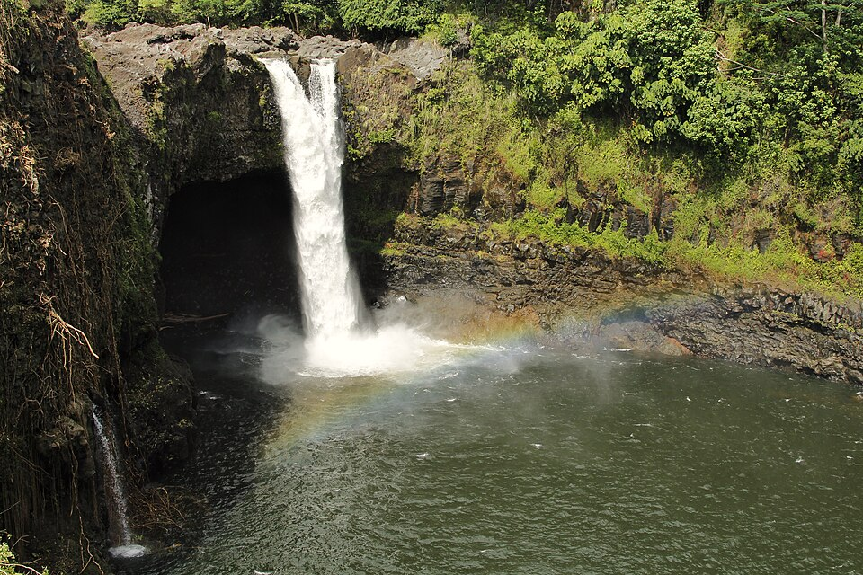

Rainbow Falls (Waiānuenue)
Place: Rainbow Falls (Waiānuenue), Wailuku River State Park, Hilo, Hawaiʻi Island
Type: Waterfall and sacred cultural site
Namesake: The traditional Hawaiian name Waiānuenue means "rainbow water," while the English name describes the colorful rainbows that frequently appear in the waterfall's mist.
Story it tells: How an ancient sacred waterfall associated with the goddess Hina became one of Hawaiʻi's earliest tourist attractions while preserving centuries of Hawaiian tradition, mythology, and the powerful Wailuku River.

Rainbow Falls, known in Hawaiian as Waiānuenue, is one of Hawaiʻi's most recognizable waterfalls. Located within Wailuku River State Park just minutes from downtown Hilo, the 80-foot waterfall plunges over an ancient basalt cliff into a pool carved by thousands of years of rushing water. On sunny mornings, sunlight refracting through the mist often produces brilliant rainbows, inspiring the English name "Rainbow Falls." The traditional Hawaiian name, carries the same meaning. Waiānuenue translates directly to "rainbow water."
Although today the falls are reached by a short walk from a parking lot, Waiānuenue was once regarded as a wahi pana, a celebrated place of deep spiritual significance. The waterfall forms part of the Wailuku River, whose name means "destroying water," a reminder of the river's tremendous power and unpredictable floods. Fed by rain across the slopes of Mauna Kea and Mauna Loa, the twenty-eight-mile river can change within minutes from a peaceful stream into a raging torrent after storms far upstream, even while the skies over Hilo remain clear.
The waterfall is inseparable from one of Hawaiʻi's best-known moʻolelo. Behind the falls is a large cave recognized as the home of Hina, the moon goddess and master maker of kapa, or bark cloth. Hina lived peacefully beneath the falls until she was threatened by the giant moʻo, or supernatural lizard, Kuna, who lived farther upstream. Jealous of Hina and determined to drive her from her home, Kuna repeatedly disturbed her by sending water and rocks crashing into her cave.
The conflict reached its peak during a massive storm. Kuna rolled an enormous boulder into the Wailuku River, damming the channel and causing the water to rise until Hina's cave began to flood. Trapped beneath the waterfall, Hina called to her son Māui for help. Hearing her cries from the island that now bears his name, Māui paddled to Hilo, crossing the channel in only two strokes of his canoe paddle. Arriving at the river, he shattered the boulder blocking the gorge, saving his mother from drowning.
Māui then chased Kuna upstream. The moʻo fled into the deep pools above the falls, where Māui threw hot lava stones into the river to flush him from hiding. The churning waters of today's Boiling Pots commemorate this legendary battle. After defeating Kuna, Māui's victory restored peace to the river. Some say an elongated rock below Rainbow Falls is the petrified body of the defeated moʻo. Whether viewed as mythology or cultural memory, the story explains many of the river's geological features.
The river formed a formidable natural barrier that could become impassable during periods of heavy rain. Ancient trails crossed the upper reaches of the river where conditions allowed, while families gathered freshwater shrimp, gobies, snails, and other resources from its pools. The river water also supported kapa production, connecting life back to the area moʻolelo surrounding Hina, the deity of bark cloth makers.
As Hilo developed into one of Hawaiʻi's principal sugar ports during the late nineteenth century, Rainbow Falls became one of the islands' earliest tourist attractions. Unlike many spectacular waterfalls that require long hikes through remote valleys, Waiānuenue stood only minutes from the growing town. Roads were improved, Waiānuenue Avenue connected the falls with the bayfront, and visitors could easily stop to admire the natural wonder. During this period, the English name "Rainbow Falls" replaced Waiānuenue in popular usage, emphasizing the colorful spectacle while largely overlooking the cultural significance of Hina's cave.
The landscape itself also changed. A large banyan tree, planted during Hilo's early tourism era, eventually spread its massive aerial roots across the rim of the falls, becoming almost as recognizable as the waterfall itself. Though not native to Hawaiʻi, the tree flourished in Hilo's exceptionally wet climate.
Today, Rainbow Falls is one of the few major waterfalls in the world located within the limits of a city. Visitors can stand at the overlook only minutes after leaving downtown Hilo. Depending on rainfall, the falls may appear as a thin ribbon flowing into a tranquil pool or as a roaring wall of whitewater hemorrhaging down the gorge. Swimming is prohibited because powerful currents, fluctuating water levels, and hidden hazards make the plunge pool extremely dangerous with numerous fatalities in years past.
For centuries the waterfall has been a place where geology, hydrology, mythology, and Hawaiian culture converge. It is both a spectacular natural landmark and a reminder that some of Hawaiʻi's most famous attractions were revered long before they were put in a Trip Advisor Top 10 list.